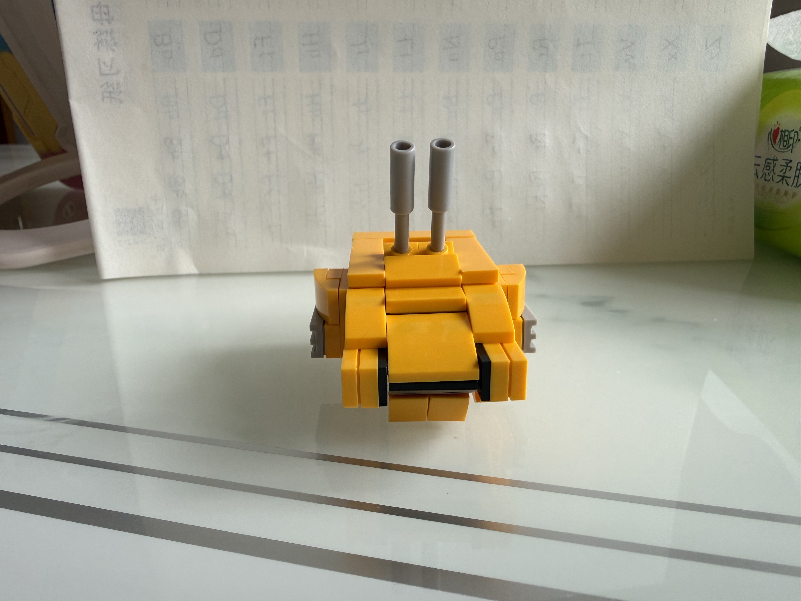
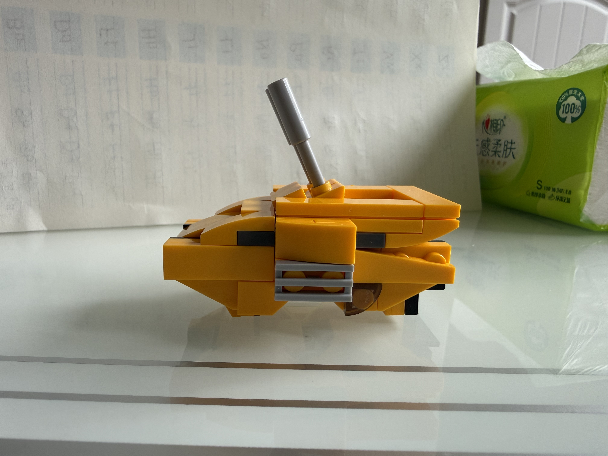
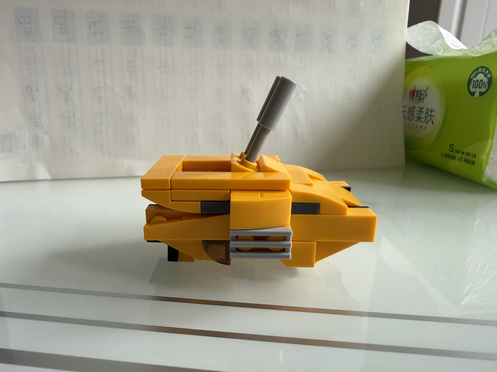
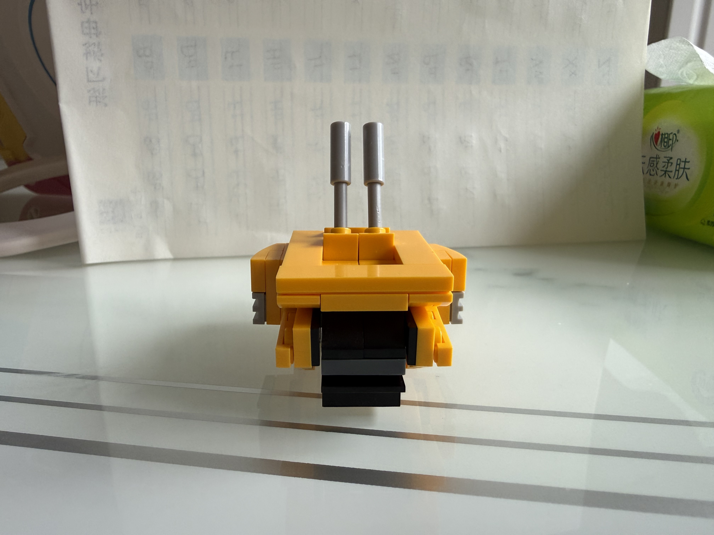
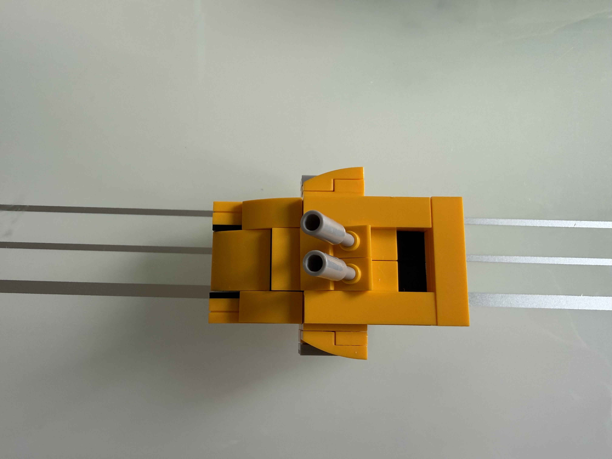

藏品 001 PHOTO TO FORM
机械翼龙战车.
一只机械翼龙，一辆探索战车。让积木里的想象，走进 3D 世界。
交互式 3D 预览TRANSFORMATION / V3
01 / 07
战车驶入
四轮滚动，进入展示区域
TRANSFORM 20s已暂停
正在搭建你的积木世界…
拖动旋转 · 滚动缩放
COLLECTION 002 · BRICK RECONSTRUCTION
黄色双炮坦克5 张参考照片
交互式 3D 预览





BEHIND THE BUILD
翼龙战车参考照片18
每一个角度，都是还原想象的线索。
点击照片，查看原始细节。